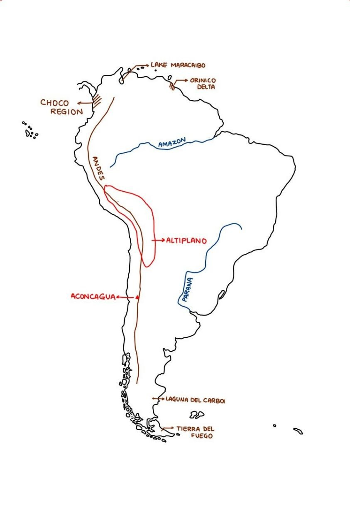
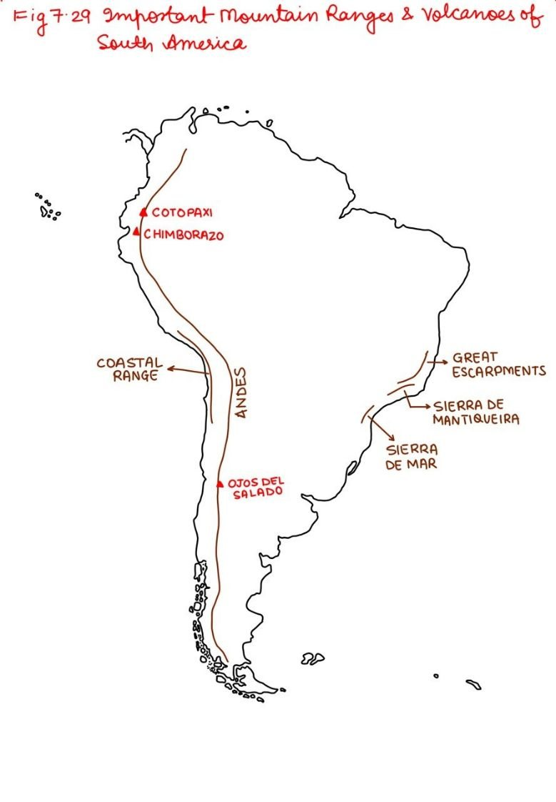
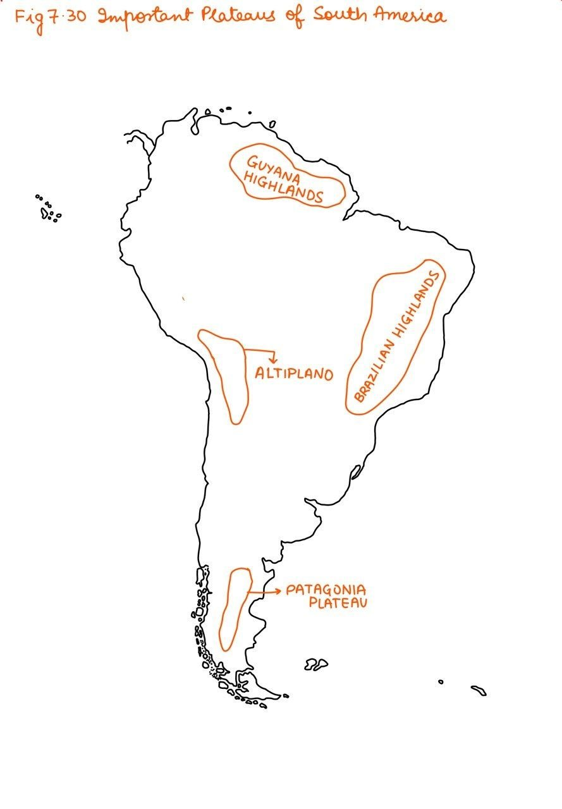
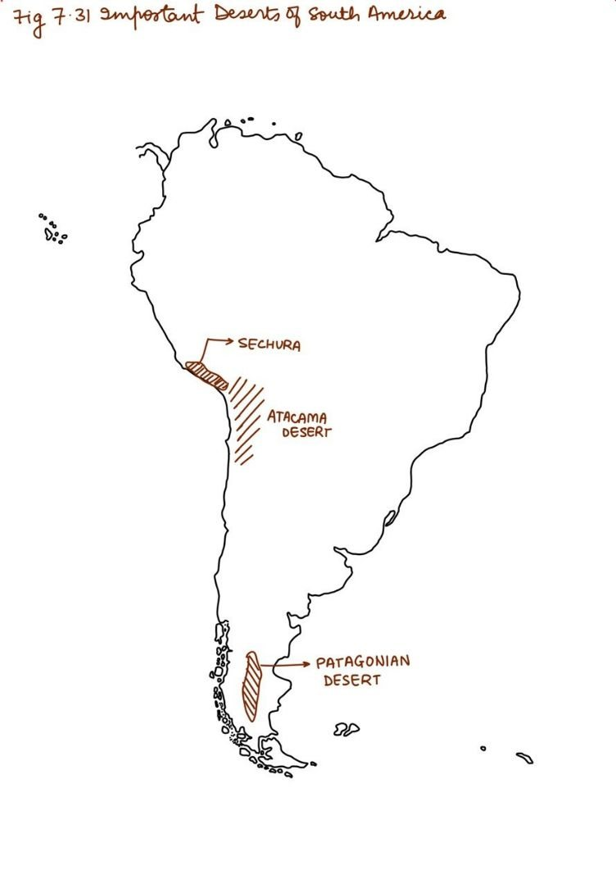
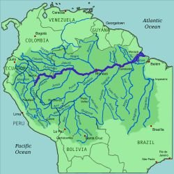
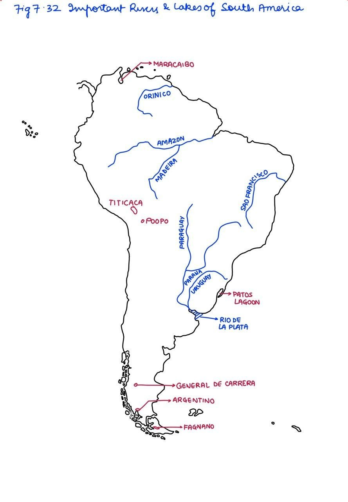
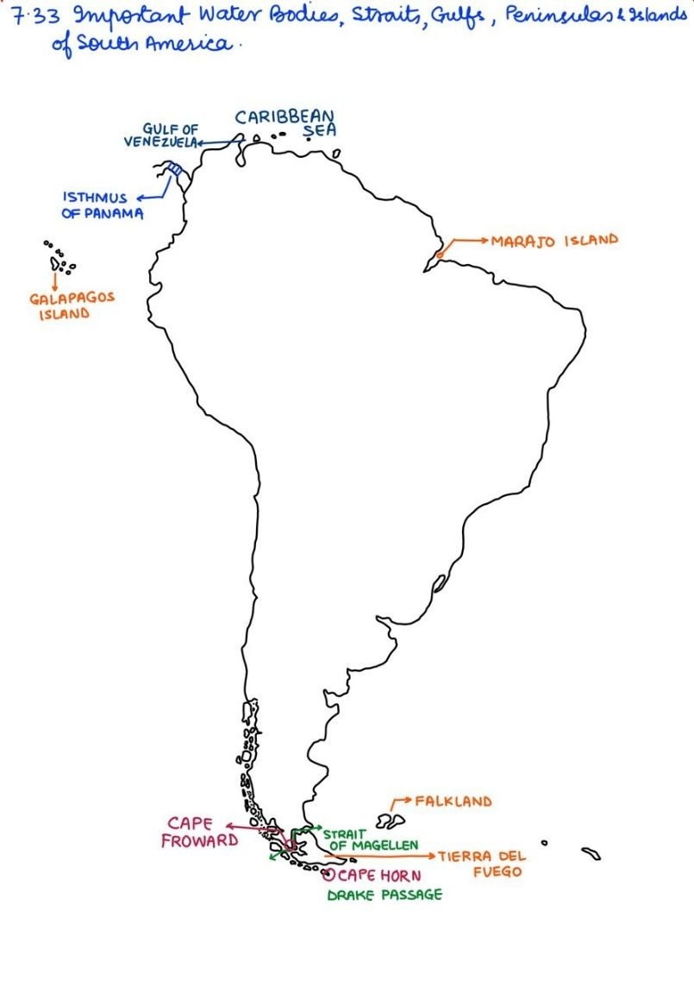

South AmericaHigh priority
Regions, facts, Andes, Amazon basin, lakes, straits, islands. Every slide row and every map of the class, in order, with the teacher’s mnemonics, traps, drills, a quiz and flashcards.
Exam lens#
Priority: High (5 handout PYQs map here; the handout quotes Prelims questions only, so Mains years: none quoted in the material).
| Year | What was asked | Answer | Where |
|---|---|---|---|
| 2013 | Which one of the following pairs is correctly matched? Geographical Feature Region The Atlas Mountains ar… | B | Handout Q2 |
| 2024 | Pairs/list: Region Name of the mountain Type of range mountain 1. Central Asia Vosges Fold mountain 2. Eu… | B | Handout Q19 |
| 2025 | Pairs/list: I. Bolivia II. Brazil III. Colombia IV. Ecuador V. Paraguay VI. Venezuela Andes mountains pas… | C | Handout Q20 |
| 2025 | Pairs/list: I. Lake Tanganyika II. Lake Tonlé Sap III. Patos Lagoon Through how many of them does the equ… | D | Handout Q21 |
| 2026 | Tungurahua Volcano, which was declared a Global Geopark by UNESCO in 2025, is situated in which one among… | A | Handout Q25 |
Prelims hooks
- Andes: which of six countries it crosses (2025); Andes are fold mountains (2024); Guiana Highlands (2013).
- Latest pattern (2026): a named volcano in the news, Tungurahua, placed in Ecuador in the Andes.
Map drill: the teacher’s annotated maps are the exam tool here. Every map slide of this chapter sits beside its tables.
In simple words#
- South America: the Andes run along the west coast; the Amazon basin fills the north and centre; Atacama and Patagonia are the main deserts.
1 · Regions of South America and the continent at a glance#
SOUTH AMERICA
South America consists of 12 independent countries. These are Argentina, Bolivia, Brazil, Chile, Colombia, Ecuador, Guyana, Paraguay, Peru, Suriname, Uruguay, and Venezuela. In addition, French Guiana is an overseas department of France on the continent, and the Falkland Islands lie off the southeastern coast in the South Atlantic.
Facts:
| Particular | Fact | Details |
|---|---|---|
| Continent Size | About 17.81 million sq km | Fourth-largest continent. |
| Highest Point | Mount Aconcagua (6,961 m) | In Argentina; highest peak in South America and the Western Hemisphere. Also the highest peak in the world beyond the Himalayas. |
| Lowest Point | Laguna del Carbón (−105 m) | In Argentina |
| Longest Mountain Range | Andes | About 8,900 km long; longest continental mountain range in the world. |
| Largest Island | Tierra del Fuego | At the southern tip of South America; shared by Chile and Argentina. |
| Largest Lake (Area) | Lake Maracaibo | Located in Venezuela. Contains huge crude oil reserves. |
| Deepest Lake | Lake O’Higgins / San Martín (836 m) | Shared by Chile and Argentina in Patagonia; deepest lake in the Americas. |
| Longest River | Amazon River | Largest river system in South America and generally treated as the continent’s longest river. |
| Particular | Fact | Details |
|---|---|---|
| Second Longest River | Paraná River | Second-largest river system in South America; |
| Wettest Place | Chocó region, Colombia | One of the wettest places on Earth |
| Northernmost Point | Punta Gallinas | In Colombia. |
| Southernmost Point | Cape Horn | In Chile |
| Westernmost Point | Punta Pariñas | In Peru. |
| Easternmost Point | Cape Branco | In Brazil. Britannica uses Cape Branco |
| Largest Delta | Amazon Delta | In Brazil; major Atlantic delta. |
| Major Plateau | Altiplano Plateau | Highest plateau in South America |


2 · Mountains, volcanoes, plateaus and deserts#
Mountain Ranges of South America
| Mountain Range | Type / Key Features | Countries / Location |
|---|---|---|
| Andes | Young Fold Mountains; Nazca plate & South American Plate; Longest mountain range (8900 km); Mt. Aconcagua (6961 m); Patagonian Andes extension | BCC VAPE (Bolivia, Columbia, Chile, Venezuela, Argentine, Peru, Ecuador) |
| Serra de Mar & Serra de Mantiqueira | Old block mountains; Part of Brazilian Shield; Rich in mineral resources | Brazil |
| Great Escarpments | Created due to continental split | Brazil / Southern America |
| Coastal Range | Old Block mountains; Parallel to Andes | Chile |


Important Volcanic Mountains of South America
| Volcano | Country / Location | Type | Status | Significance |
|---|---|---|---|---|
| Cotopaxi | Ecuador | Stratovolcano | Active | One of the world’s highest active volcanoes; a near-symmetrical cone |
| Chimborazo | Ecuador | Stratovolcano | Dormant | Highest peak in Ecuador; its summit is the farthest point on Earth’s surface from Earth’s centre because of the equatorial bulge. |
| Tungurahua | Ecuador | Stratovolcano | Active | Part of Andes. Used to be a glacier, but the summit melted in 1999. Part of UNESCO Global Geopark network. |
| Ojos del Salado | Chile-Argen tina border | Stratovolcano | Active | Highest active volcano in the world; located near the Atacama Desert |
Important Plateaus of South America
| Plateau | Location / Countries | Key Features |
|---|---|---|
| Altiplano (Andean Plateau) | Peru and Bolivia | High intermontane Andean plateau; among the world’s highest plateaus; contains Lake Titicaca and the Uyuni salt flat region |
| Patagonia Plateau | Primarily Argentina | Semiarid scrub plateau; has steppe and desert conditions |
| Brazilian Highlands | Brazil | Vast eroded plateau; covers over half of Brazil; Source of many rivers, and minerals. |
| Guiana Highlands | Venezuela, Guyana, Suriname, French Guiana, Brazil | Ancient plateau/highland region; Rich in minerals; Angel Falls lies here on the Churún River |


Deserts of South America
| Desert | Location | Key Features |
|---|---|---|
| Atacama Desert | Bolivia, Chile, Argentina, Peru (Bolivian CAP) | Mainly in Chile and Peru; One of the driest non-polar deserts, a sub-tropical west margin desert; linked with the Lithium Triangle region (covered in Chapter 8) |
| Sechura / Peruvian Coastal Deserts | Peru | Sub-tropical west margin desert shaped by the Humboldt (Peru) Current |
| Patagonian Desert | Mainly Argentina, with a small part in Chile | Cold desert; dry, windy, semiarid to arid mid-latitude desert |


3 · Rivers, the Amazon basin and lakes#
Important Rivers of South America
| River | Location | Source | Mouth | Features |
|---|---|---|---|---|
| Amazon River | Peru, Colombia, Brazil (PCB) | Andes of Peru | Atlantic Ocean | Largest river of the world by discharge; flows through the Amazon rainforest. |
| Paraná River | Brazil, Paraguay, Argentina | Confluence of the Grande and Paranaíba rivers in southern Brazil | Río de la Plata | Second-longest river in South America |
| Orinoco River | Venezuela, Colombia | Parima Mountains, Venezuela | Atlantic Ocean | Moves through Llanos grasslands. Its tributary Churun, makes the highest waterfall of the world “Angel Falls”. |
| Madeira River | Bolivia, Brazil | Formed by the Beni and Mamoré rivers in Bolivia | Amazon River | The longest tributary of the Amazon. |
| River | Location | Source | Mouth | Features |
|---|---|---|---|---|
| São Francisco River | Brazil | Near Minas Gerais | Atlantic Ocean | Largest river wholly within Brazil. Not in San Francisco. |
| Uruguay River | Brazil, Uruguay, Argentina | Coastal range of southern Brazil, after joining the Canoas River | Río de la Plata | Forms part of the Argentina-Uruguay border |
| Río de la Plata | Argentina, Uruguay | Confluence of the Paraná and Uruguay rivers | Atlantic Ocean | A large estuary, not a normal river in the strict sense; major trade outlet. |
| Paraguay River | Brazil, Bolivia, Paraguay, Argentina | Bolivian hills / upper basin near Mato Grosso | Paraná River | Flows through the Pantanal wetlands |
Amazon Basin
The Amazonian Basin is the world’s largest drainage basin, comprising a vast network of rivers that flow through dense equatorial rainforest with extremely high biodiversity. These forests are known as Selvas. It has a hot, humid equatorial climate with heavy year-round rainfall, leading to extensive floodplains (varzea) and swamps (igapo). The basin plays a crucial role in global climate regulation, acting as a major carbon sink (hence its nickname “lungs of the Earth”) and influencing atmospheric circulation and rainfall patterns.
Its countries include: Venezuela, Suriname, French Guiana, Brazil, Bolivia, Peru, Ecuador, Colombia, and Guyana. (V Should First get B2P and ECG done) The only South American countries outside the Amazonian basin include Argentina, Chile, Uruguay, Paraguay (A CUP).
Amazon Basin




Important Lakes of South America
| Lake | Location | Type | Significance |
|---|---|---|---|
| Lake Titicaca | Peru-Bolivia | Freshwater lake | World’s highest lake navigable to large vessels (3810 m) |
| Lake Maracaibo | Venezuela | Brackish lake / large inlet of the Caribbean Sea | The largest natural lake in South America; important oil-producing region. |
| Lake Poopó | Bolivia | Saline (salt) endorheic lake | Highly prone to shrinking and even drying up, like in 2015. |
| General Carrera / Lago Buenos Aires | Chile-Argentina | Glacial lake | Largest lake in Chile; famous for the Marble Caves. |
| Lagoa dos Patos (Patos Lagoon) | Brazil | Lagoon | Largest lagoon in Brazil and second-largest lagoon in South America. |
| Lake Argentino | Argentina | Glacial lake | Largest freshwater lake in Argentina. |
| Lake Fagnano | Chile-Argentina (Tierra del Fuego) | Tectonic / fault-bounded lake | Occupies an east–west structural valley |
4 · Water bodies, capes, grasslands and islands#
Important Water Bodies, Straits and Isthmuses of South America
| Name | Location | Surrounding countries | Important features |
|---|---|---|---|
| Caribbean Sea | Covered in Table 7.45 | ||
| Strait of Magellan | Southern tip of South America | Chile, Argentina | Natural navigable passage linking the Atlantic and Pacific Oceans; lies mostly in Chilean waters, with the eastern extreme touched by Argentina. |
| Drake Passage | South of Cape Horn, between South America and Antarctica | Chile and Antarctica | Connects the Atlantic and Pacific; separates South America from Antarctica; famous for extremely rough seas so difficult to navigate. |
| Gulf of Venezuela | Northern South America | Venezuela, Colombia | Inlet of the Caribbean Sea; connects toward the Lake Maracaibo oil region. |
| Isthmus of Panama | Covered in Table 7.45 |
Important Capes and Peninsulas of South America
| Name | Location | Surrounding countries | Important features |
|---|---|---|---|
| La Guajira Peninsula | Northwestern coast of South America | Colombia, Venezuela | Bounded by the Caribbean Sea and the Gulf of Venezuela |
| Paraguaná Peninsula | Northwestern Venezuela | Venezuela | Largest peninsula of Venezuela; lies between the Caribbean Sea and the Gulf of Venezuela. |
| Cape Horn | Hornos Island, far southern Chile | Chile | Famous rocky headland of the Tierra del Fuego archipelago; marks the northern edge of the Drake Passage. |
| Cape Froward | Southern tip of Chile | Chile | Southernmost point of mainland South America; located on the Strait of Magellan. |


Grasslands of South America
| Grassland | Countries | Important features |
|---|---|---|
| Pampas | Argentina, Uruguay, Brazil | Temperate grassland; especially important for wheat cultivation and cattle ranching |
| Llanos | Venezuela, Colombia | Broad tropical grassland plains of the Orinoco basin; wet-season flooding and dry-season grazing conditions. |
| Campos | Brazil, Uruguay | Grasslands adjacent to the Pampas, especially in southern Brazil and Uruguay |
| Patagonian Steppe | Argentina, Chile | Cold, dry steppe grassland south of the Pampas; presence of tussock grasses. |
| Pantanal grasslands | Brazil, Bolivia, Paraguay | World’s largest tropical grassland; a Ramsar site; alternates between dry grassland and shallow wetland conditions. |
Important Islands of South America
| Island | Location | Countries | Important features |
|---|---|---|---|
| Tierra del Fuego | Southern tip of South America | Chile, Argentina | About two-thirds Chilean and one-third Argentine. |
| Galápagos Islands | Eastern Pacific Ocean | Ecuador | Volcanic island group; world-famous for unique biodiversity and Darwinian evolution studies. |
| Falkland Islands (Islas Malvinas) | South Atlantic Ocean | United Kingdom (claimed by Argentina) | Located east of the Strait of Magellan region. |
| Marajó Island | Amazon delta, northern South America | Brazil | World’s largest fluvial island; Bigger than Majuli but lies at the confluence of river and ocean. So, Majuli is still the largest riverine island in the world. |
| Juan Fernández Islands | South Pacific Ocean | Chile | Small Pacific archipelago; famous for Robinson Crusoe Island and high endemism. |
Teacher’s mnemonics#
The teacher’s own words for each list, kept exactly. Each shows the countries from the slide row.
Traps#
| Trap | What goes wrong, and the rule |
|---|---|
| Brazil and Paraguay | Both lie east of the Andes; the Andes cross Bolivia, Colombia, Ecuador and Venezuela among the six listed (PYQ 2025). |
| Sao Francisco | The slide notes the Sao Francisco is the largest river wholly within Brazil. |
Recall sheet#
Read once, hide it, then rebuild the chapter from memory.
- South America: Continent Size? → About 17.81 million sq km · Fourth-largest continent.
- South America: Highest Point? → Mount Aconcagua (6,961 m) · In Argentina; highest peak in South America and the Western Hemisphere. Also the highest peak in the world beyond the Himalayas.
- South America: Lowest Point? → Laguna del Carbón (−105 m) · In Argentina
- South America: Longest Mountain Range? → Andes · About 8,900 km long; longest continental mountain range in the world.
- South America: Largest Island? → Tierra del Fuego · At the southern tip of South America; shared by Chile and Argentina.
- South America: Largest Lake (Area)? → Lake Maracaibo · Located in Venezuela. Contains huge crude oil reserves.
- South America: Deepest Lake? → Lake O’Higgins / San Martín (836 m) · Shared by Chile and Argentina in Patagonia; deepest lake in the Americas.
- South America: Longest River? → Amazon River · Largest river system in South America and generally treated as the continent’s longest river.
- South America: Second Longest River? → Paraná River · Second-largest river system in South America;
- South America: Wettest Place? → Chocó region, Colombia · One of the wettest places on Earth
- South America: Northernmost Point? → Punta Gallinas · In Colombia.
- South America: Southernmost Point? → Cape Horn · In Chile
- South America: Westernmost Point? → Punta Pariñas · In Peru.
- South America: Easternmost Point? → Cape Branco · In Brazil. Britannica uses Cape Branco
Revise#
| Day | What to do |
|---|---|
| Day 0 | Read the Exam lens and the notes; mark the chapter done |
| Day +1 | Recall sheet: read once, hide, rebuild |
| Day +3 | Flashcards: missed ones only |
| Day +7 | Quick quiz; fix each miss against the Traps |
| Day +21 | Redraw every map below from memory |
| Day +45 | Blank-page test: maps and mnemonics only |
Blank-map drills (redraw the teacher’s maps)
- Redraw "Important features of South America" (slide 132) on a blank outline and mark at least: Continent Size; Highest Point; Lowest Point; Longest Mountain Range; Largest Island; Largest Lake (Area); Deepest Lake; Longest River.
- Redraw "Important mountain ranges and volcanoes of South America" (slide 134) on a blank outline and mark at least: Andes; Serra de Mar & Serra de Mantiqueira; Great Escarpments; Coastal Range.
- Redraw "Important plateaus of South America" (slide 137) on a blank outline and mark at least: Cotopaxi; Chimborazo; Tungurahua; Ojos del Salado; Altiplano (Andean Plateau); Patagonia Plateau; Brazilian Highlands; Guiana Highlands.
- Redraw "Important deserts of South America" (slide 139) on a blank outline and mark at least: Atacama Desert; Sechura / Peruvian Coastal Deserts; Patagonian Desert.
- Redraw "Amazon Basin" (slide 143) on a blank outline and mark at least: Amazon River; Paraná River; Orinoco River; Madeira River; São Francisco River; Uruguay River; Río de la Plata; Paraguay River.
- Redraw "Important rivers and lakes of South America" (slide 144) on a blank outline and mark at least: every feature the teacher marked.
- Redraw "Water bodies, straits, gulfs, peninsulas and islands of South America" (slide 148) on a blank outline and mark at least: Caribbean Sea; Strait of Magellan; Drake Passage; Gulf of Venezuela; Isthmus of Panama; La Guajira Peninsula; Paraguaná Peninsula; Cape Horn.
Test yourself#
Quick quiz
Flashcards
Tap the card to flip. Every card is a row of the slide tables.